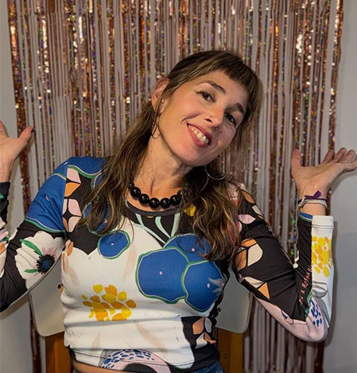
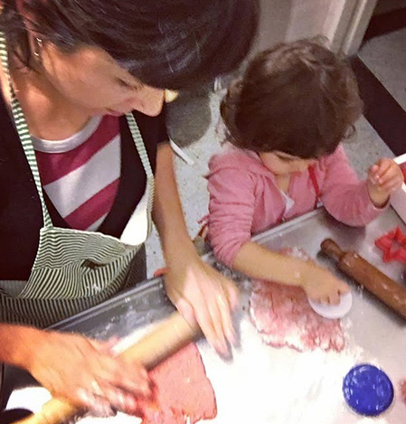
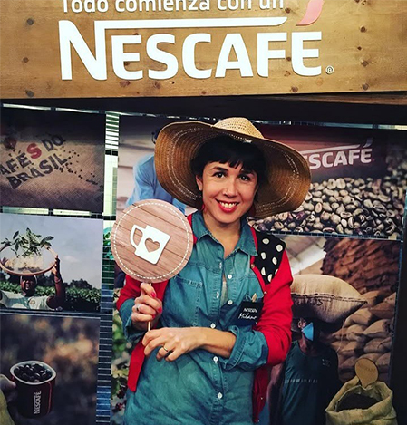

Agustina Martínez Alcorta
Lic. en Comunicación Social - Universidad de Buenos Aires Buenos Aires / Capital Federal, Argentina



¿Quién soy?
Tengo 38 años, soy mamá de Ela y esposa de Ramiro, y vivimos en una casita con un lindo árbol y una buena terraza en la Ciudad de Buenos Aires.
¿Por qué Ponete el Delantal?
Este blog es en honor a Mamama, porque cada vez que me pongo el delantal, como ella siempre me decía, me acuerdo de mis tardes en su cocina, y del abuelo Nacho llegando del supermercado con el changuito lleno de cosas ricas para preparar. Disfruto mucho cocinar y si bien lo mío es amateur espero, desde este lugar, poder transmitir un poco de ese placer que es para mí la cocina. La idea de este espacio, que nació en agosto de 2011, es compartir recetas propias, recetas que saco de algún lado, de mis nuevos referentes gastronómicos, o ideas para armar algún plato. Contarles algunos de mis tips y que ustedes se animen a compartir los suyos; y sugerir o recomendar algunos lugares para comer rico, tomar algo, ferias, bazares y todo lo que tenga que ver con el placer de cocinar.